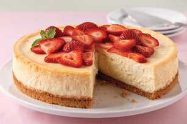

Grease 18 regular-size muffin cups (or 12 large size muffins).
In bowl, mix butter until creamy. Add sugar and beat until pale and fluffy.
Add eggs one at a time, beating after each.
Beat in vanilla, baking powder and salt.
With spoon, fold in half of flour then half of milk into batter; repeat.
Fold in blueberries.
Spoon into muffin cups and sprinkle topping onto each muffin.
Bake 15 to 20 minutes, until golden brown and springy to touch.

Ingredients
1 cup graham crumbs
3 Tbsp. sugar
3 Tbsp. butter, melted
5 pkg. (250 g each) Philadelphia Brick Cream Cheese, softened
1 cup sugar
3 Tbsp. flour
1 Tbsp. vanilla
1 cup sour cream
4 eggs
Preparation
Heat oven to 325ºF.
Mix crumbs, 3 Tbsp. sugar and butter; press onto bottom of 9-inch springform pan. Bake 10 min.
Beat cream cheese, 1 cup sugar, flour and vanilla in large bowl with mixer until blended. Add sour cream; mix well. Add eggs, 1 at a time, mixing on low speed after each just until blended. Pour over crust.
Bake 1 hour 10 min. or until centre is almost set. Run knife around rim of pan to loosen cake; cool before removing rim. Refrigerate 4 hours.